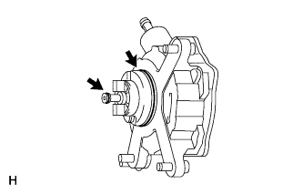
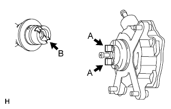
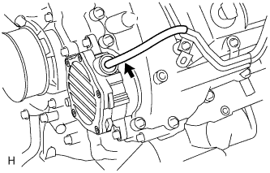
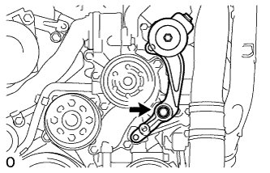
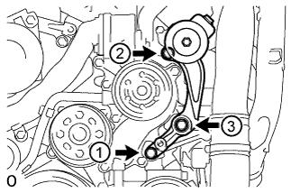
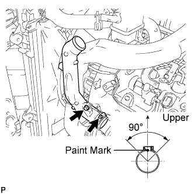
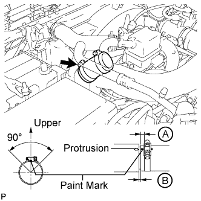
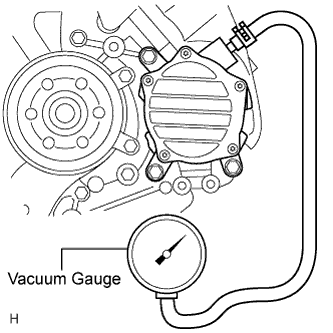

VACUUM PUMP (for 1VD-FTV) > INSTALLATION |
| 1. INSTALL VACUUM PUMP ASSEMBLY |
 |
Apply engine oil to 2 new O-rings.
Install the 2 O-rings to the vacuum pump.
 |
Install the vacuum pump so that the coupling teeth of the vacuum pump (labeled A) and the groove of the camshaft (labeled B) are aligned.
 |
Install the vacuum pump with the 3 bolts.
| 2. CONNECT UNION TO CONNECTOR TUBE HOSE |
 |
Connect the hose to the vacuum pump.
| 3. INSTALL NO. 2 IDLER PULLEY BRACKET (w/ Viscous Heater) |
 |
Temporarily install the No. 2 idler pulley bracket with the bolt.
Temporarily install the 2 bolts to the No. 2 idler pulley bracket bolt hole.
 |
Uniformly tighten the 3 bolts of the No. 2 idler pulley bracket in the order shown in the illustration.
| 4. INSTALL NO. 2 IDLER PULLEY (w/ Viscous Heater) |
 |
Install the collar, No. 2 idler pulley and cover with the bolt.
| 5. INSTALL V-RIBBED BELT (w/ Viscous Heater) |
 |
Install the V-ribbed belt as shown in the illustration.
 |
Temporarily install the lock nut, and turn the bolt clockwise.
 |
Using a belt tension gauge, adjust belt tension.
| Item | Specified Condition |
| New belt | 400 to 650 N (41 to 66 kgf, 89.9 to 146.1 lbf) |
| Used belt | 300 to 500 N (31 to 51 kgf, 67.4 to 112.4 lbf) |
 |
Tighten the nut.
 |
Check that the belt fits properly in the ribbed grooves.
| 6. INSTALL NO. 2 AIR CLEANER PIPE SUB-ASSEMBLY |
 |
Connect the No. 2 air cleaner pipe to the No. 2 intake air connector pipe.
Connect the ventilation hose to the oil separator.
Install the pipe with the bolt.
Tighten the hose clamp.
| 7. INSTALL NO. 4 AIR TUBE |
 |
Install the No. 4 air tube with the bolt.
Tighten the hose clamp.
 |
Install the suction hose with the bolt.
| 8. INSTALL NO. 2 AIR HOSE |
 |
Connect the No. 2 air hose with the hose clamp.
| 9. CHECK VACUUM PUMP OPERATION |
Disconnect the union to connector tube hose from the vacuum pump.
 |
Connect a vacuum gauge to the vacuum pump.
Start the engine and warm it up for more than 2 minutes.
With the engine idling, measure the negative pressure of the vacuum pump.
Remove the vacuum gauge from the vacuum pump.
Connect the union to connector tube hose to the vacuum pump.